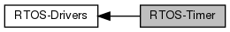

|
osG
0.2.0
|
|  |
Functions | |
| void | osg_rtos_Timer_ctor (osg_Timer *self, const osg_TimerConfig *const config) |
| Constructor for timer. More... | |
| void | osg_rtos_Timer_dtor (osg_Timer *self) |
| Destructor. More... | |
| osg_TimerType | osg_rtos_Timer_getType (osg_Timer *self) |
| Returns the timer type. More... | |
| bool | osg_rtos_Timer_isRunning (osg_Timer *self) |
| Check if a timer is running. More... | |
| bool | osg_rtos_Timer_start (osg_Timer *self, const uint32_t millis) |
| Start the timer. More... | |
| bool | osg_rtos_Timer_stop (osg_Timer *self) |
| Stop the timer. More... | |
RTOS methods for Timer
| void osg_rtos_Timer_ctor | ( | osg_Timer * | self, |
| const osg_TimerConfig *const | config | ||
| ) |
Constructor for timer.
| self | The timer object. |
| config | The timer config. |
| void osg_rtos_Timer_dtor | ( | osg_Timer * | self | ) |
Destructor.
| self | The timer object. |
| osg_TimerType osg_rtos_Timer_getType | ( | osg_Timer * | self | ) |
Returns the timer type.
| self | The timer. |
| bool osg_rtos_Timer_isRunning | ( | osg_Timer * | self | ) |
Check if a timer is running.
| self | The timer object. |
| bool osg_rtos_Timer_start | ( | osg_Timer * | self, |
| const uint32_t | millis | ||
| ) |
Start the timer.
| self | The timer object. |
| millis | Value of the timer in milliseconds. |
| bool osg_rtos_Timer_stop | ( | osg_Timer * | self | ) |
Stop the timer.
| self | The timer object. |
1.8.14